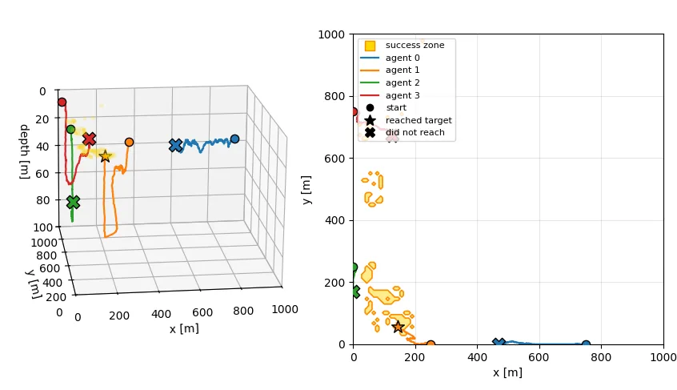

MSc ThesisMulti-Agent RL for Underwater Search and Navigation
Teams of autonomous underwater vehicles learn to navigate and find target zones in a physically realistic ocean simulation, as part of the IREG coral-reef project (Sorbonne University Abu Dhabi). Compared PPO, IPPO and MAPPO: communication between agents raised success rate by up to 24% on the hardest targets. Also extended the open-source SwarmSwIM simulator.